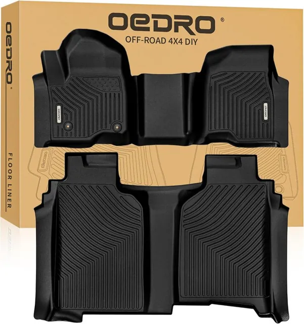
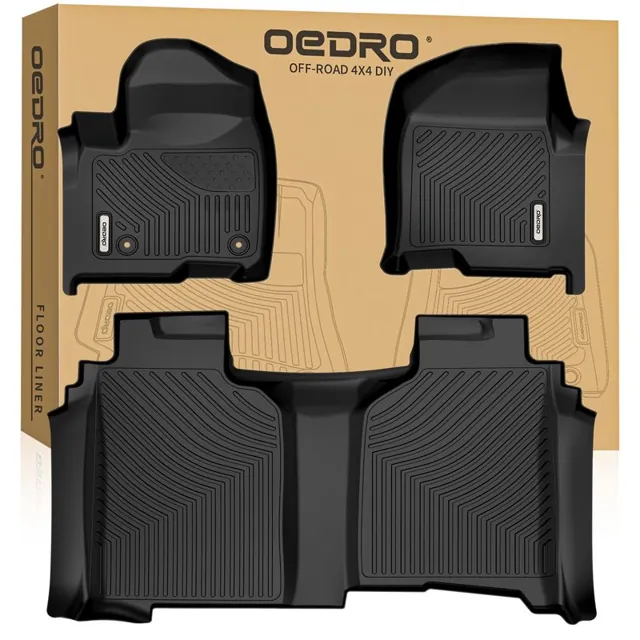

Silverado and Sierra Floor Mats: Match the Cab and Seat Layout
Sort Silverado and Sierra liners by model series, cab, front-seat layout, and rear storage, with examples of real product-page exclusions.
In this guide
Write the full truck description
Start with Chevrolet Silverado or GMC Sierra, model year, and the series shown on your vehicle documents. Keep 1500, 2500HD, and 3500HD distinct. Add the exact cab designation, such as Crew Cab or Double Cab. The name “Silverado” or “Sierra” alone cannot identify the floor layout.
If your truck's model year appears in a period where a seller distinguishes body versions, include the version in the inquiry. Use the original vehicle paperwork or a dealer's identification rather than deciding from a grille photograph.
Do not copy a fitment range from a similarly named product. OEDRO's Double Cab bench-seat listing starts its light-duty and HD applications in different years. That distinction belongs to the listed part; it is not an invitation to combine all series into one universal range.
Identify the front seating and center area
Photograph the front seats and the floor between them. Record whether the first row uses a bench arrangement or separate bucket seats with a console. If the center section folds, describe what it is rather than simply saying the truck has a console.
OEDRO offers a Crew Cab liner application that specifies bench seating. That wording is a buying condition. A product photo that resembles your floor does not override a written seat-layout requirement.
Pay attention to center coverage. Some shoppers need protection where a middle passenger's feet rest; others have a fixed console occupying that space. Ask what the selected set covers there. A package listing “front mats” does not by itself explain the shape or extent of the center section.
When two listings look almost identical, compare their application and piece diagrams side by side. Price, review count, and product photography are poor substitutes for identifying the intended seating layout.
Look under the rear seat
Record whether a storage box or other fixed organizer occupies the rear floor. Include aftermarket equipment as well as factory parts. Take a wide photo that shows the entire rear footwell, then a close-up where the equipment meets the carpet.
The OEDRO Crew Cab bench-seat example and Double Cab example both specify no rear under-seat storage box. OEDRO also has a separate Crew Cab liner page that also excludes vehicles with an under-seat storage box. For vehicles with a floor-mounted shifter, confirm that the selected liner fits before ordering. These pages do not establish that every Crew Cab uses the same liner.
If a seller proposes removing your storage box, decide whether that would defeat the reason you use the truck. Ask for a liner that supports the equipment you intend to keep. Do not plan to pinch the liner beneath a box or cut its border without approved instructions.
Keep warranty and fitment separate
OEDRO floor mats have a two-year warranty, including the Crew Cab and Double Cab examples linked here. The shared one-year site banner applies to other product categories; it is not the warranty duration for these OEDRO mats.
Keep the applicable warranty terms with your order record. Do not extend the OEDRO floor-mat duration to other brands or product categories. Return eligibility and a manufacturing-defect warranty also answer different questions.
For fitment, give the seller the discrepancy in a sentence: “The title says Crew Cab, but this selected option shows Double Cab in the details.” Include the part number or selected option. A general reassurance will be less useful than a corrected application.
Inspect the set before driving
Compare the delivered label with your configuration record before fitting. Remove the existing removable mats and use the vehicle's specified retention points for the new driver's mat. Check the pedal area, seat tracks, center edges, and rear storage boundary.
If a liner cannot lie in its intended position or its retention points do not match, keep it out of use while support checks the problem. Send photographs with the order reference. The installation and care guide explains how to check attachment again after cleaning, when a correctly fitted mat can still be reinstalled incorrectly.
Parts in this guide
Shop floor mats
Floor Mats Fit for 2019-2026 Chevy Silverado/GMC Sierra 1500 & 2020-2025 GMC Sierra 2500HD/3500HD Crew Cab Bench Seating w/o Rear Storage BoxView on OEDROOEDRO Floor Mats for 2019-2026 Chevrolet Silverado / GMC Sierra 1500 2500HD 3500HD Double Cab with 1st Bench SeatsView on OEDRO
OEDRO Floor Mats Fit for 2019-2026 Chevy Silverado/GMC Sierra 1500 & 2020-2026 Silverado/Sierra 2500HD 3500HD Crew Cab ,No Rear Underseat Storage BoxView on OEDRO